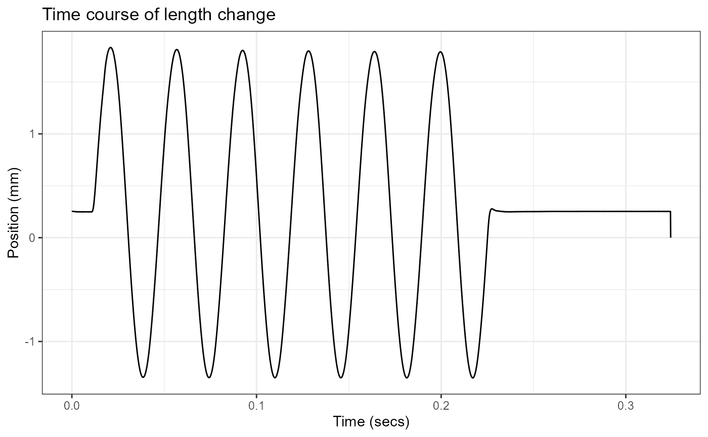

vignettes/non-ddf-sources.Rmd
non-ddf-sources.RmdworkloopR’s data import functions, such as read_ddf(), are generally geared towards importing data from .ddf files (e.g. those generated by Aurora Scientific’s Dynamic Muscle Control and Analysis Software).
Should your data be stored in another file format, you can use the as_muscle_stim() function to generate your own muscle_stim objects. These muscle_stim objects are used by nearly all other workloopR functions and are formatted in a very specific way. This helps ensure that other functions can interpret data & metadata correctly and also perform internal checks.
Before running through anything, we’ll ensure we have the packages we need.
## If a package is installed, it will be loaded. If any are not, the missing
## package(s) will be installed from CRAN and then loaded.
## First specify the packages of interest
packages <-
c("workloopR",
"magrittr",
"ggplot2")
## Now load or install&load all
package.check <- lapply(
packages,
FUN = function(x) {
if (!require(x, character.only = TRUE)) {
install.packages(x, dependencies = TRUE,
repos = "http://cran.us.r-project.org")
library(x, character.only = TRUE)
}
}
)Because it is somewhat difficult to simulate muscle physiology data, we’ll use one of our workloop files, deconstruct it, and then re-assemble the data via as_muscle_stim().
## Load in the work loop example data from workloopR
workloop_dat <-
system.file(
"extdata",
"workloop.ddf",
package = 'workloopR') %>%
read_ddf() %>%
fix_GR(GR = 2)
## First we'll extract Time
Time <- workloop_dat$Time
## Now Position
Position <- workloop_dat$Position
## Force
Force <- workloop_dat$Force
## Stimulation
Stim <- workloop_dat$Stim
## Put it all together as a data.frame
my_data <- data.frame(Time = Time,
Position = Position,
Force = Force,
Stim = Stim)
head(my_data)
#> Time Position Force Stim
#> 1 1e-04 0.2519695 609.743 0
#> 2 2e-04 0.2530985 611.033 0
#> 3 3e-04 0.2527760 609.743 0
#> 4 4e-04 0.2530985 608.775 0
#> 5 5e-04 0.2526145 610.388 0
#> 6 6e-04 0.2534210 610.066 0as_muscle_stim()
It is absolutely crucial that the columns be named “Time”, “Position”, “Force”, and “Stim” (all case-sensitive). Otherwise, as_muscle_stim() will not interpret data correctly.
At minimum, this data.frame, the type of experiment, and the frequency at which data were recorded (sample_frequency, as a numeric) are necessary for as_muscle_stim().
## Put it together
my_muscle_stim <- as_muscle_stim(x = my_data,
type = "workloop",
sample_frequency = 10000)
## Data are stored in columns and basically behave as data.frames
head(my_muscle_stim)
#> # Workloop Data: 3 channels recorded over 6e-04s
#> File ID: NA
#>
#> Time Position Force Stim
#> 1 0e+00 0.2519695 609.743 0
#> 2 1e-04 0.2530985 611.033 0
#> 3 2e-04 0.2527760 609.743 0
#> 4 3e-04 0.2530985 608.775 0
#> 5 4e-04 0.2526145 610.388 0
#> 6 5e-04 0.2534210 610.066 0
ggplot(my_muscle_stim, aes(x = Time, y = Position)) +
geom_line() +
labs(y = "Position (mm)", x = "Time (secs)") +
ggtitle("Time course of length change") +
theme_bw()
By default, a couple attributes are auto-filled based on the available information, but it’s pretty bare-bones
str(attributes(my_muscle_stim))
#> List of 22
#> $ names : chr [1:4] "Time" "Position" "Force" "Stim"
#> $ row.names : int [1:3244] 1 2 3 4 5 6 7 8 9 10 ...
#> $ class : chr [1:3] "workloop" "muscle_stim" "data.frame"
#> $ units : logi NA
#> $ header : logi NA
#> $ units_table : logi NA
#> $ protocol_table : logi NA
#> $ stim_table : logi NA
#> $ stimulus_pulses : logi NA
#> $ stimulus_offset : logi NA
#> $ stimulus_width : logi NA
#> $ gear_ratio : num 1
#> $ file_id : logi NA
#> $ mtime : logi NA
#> $ stimulus_frequency: logi NA
#> $ cycle_frequency : logi NA
#> $ total_cycles : logi NA
#> $ cycle_def : logi NA
#> $ amplitude : logi NA
#> $ phase : logi NA
#> $ position_inverted : logi FALSE
#> $ sample_frequency : num 10000We highly encourage you to add in as many of these details as possbile by passing them in via the ... argument. For example:
## This time, add the file's name via "file_id"
my_muscle_stim <- as_muscle_stim(x = my_data,
type = "workloop",
sample_frequency = 10000,
file_id = "workloop123")
## For simplicity, we'll just target the file_id attribute directly instead of
## printing all attributes again
attr(my_muscle_stim, "file_id")
#> [1] "workloop123"Here is a list of all possible attributes that can be filled.
names(attributes(workloop_dat))
#> [1] "names" "row.names" "stimulus_frequency"
#> [4] "cycle_frequency" "total_cycles" "cycle_def"
#> [7] "amplitude" "phase" "position_inverted"
#> [10] "units" "sample_frequency" "header"
#> [13] "units_table" "protocol_table" "stim_table"
#> [16] "stimulus_pulses" "stimulus_offset" "stimulus_width"
#> [19] "gear_ratio" "file_id" "mtime"
#> [22] "class"To see how each should be formatted, (e.g. which ones take numeric values vs. character vectors…etc)
str(attributes(workloop_dat))
#> List of 22
#> $ names : chr [1:4] "Time" "Position" "Force" "Stim"
#> $ row.names : int [1:3244] 1 2 3 4 5 6 7 8 9 10 ...
#> $ stimulus_frequency: int 300
#> $ cycle_frequency : int 28
#> $ total_cycles : int 6
#> $ cycle_def : chr "lo"
#> $ amplitude : num 1.57
#> $ phase : num 0.08
#> $ position_inverted : logi FALSE
#> $ units : chr [1:4] "s" "mm" "mN" "TTL"
#> $ sample_frequency : num 10000
#> $ header : chr [1:4] "Sample Frequency (Hz): 10000" "Reference Area: NaN sq. mm" "Reference Force: NaN mN" "Reference Length: NaN mm"
#> $ units_table :'data.frame': 10 obs. of 5 variables:
#> ..$ Channel: chr [1:10] "AI0" "AI1" "AI2" "AI3" ...
#> ..$ Units : chr [1:10] "mm" "mN" "TTL" "" ...
#> ..$ Scale : num [1:10] 1 500 0.2 0 0 0 0 0 1 500
#> ..$ Offset : num [1:10] 0 0 0 0 0 0 0 0 0 0
#> ..$ TADs : num [1:10] 0 0 0 0 0 0 0 0 0 0
#> $ protocol_table :'data.frame': 4 obs. of 5 variables:
#> ..$ Wait.s : num [1:4] 0 0.01 0 0.1
#> ..$ Then.action: chr [1:4] "Stimulus-Train" "Sine Wave" "Stimulus-Train" "Stop"
#> ..$ On.port : chr [1:4] "Stimulator" "Length Out" "Stimulator" ""
#> ..$ Units : chr [1:4] ".012, 300, 0.2, 4, 28" "28,3.15,6" "0,0,0,0,0" ""
#> ..$ Parameters : logi [1:4] NA NA NA NA
#> $ stim_table :'data.frame': 2 obs. of 5 variables:
#> ..$ offset : num [1:2] 0.012 0
#> ..$ frequency : int [1:2] 300 0
#> ..$ width : num [1:2] 0.2 0
#> ..$ pulses : int [1:2] 4 0
#> ..$ cycle_frequency: int [1:2] 28 0
#> $ stimulus_pulses : int 4
#> $ stimulus_offset : num 0.012
#> $ stimulus_width : num 0.2
#> $ gear_ratio : num 2
#> $ file_id : chr "workloop.ddf"
#> $ mtime : POSIXct[1:1], format: "2019-07-21 10:08:21"
#> $ class : chr [1:3] "workloop" "muscle_stim" "data.frame"